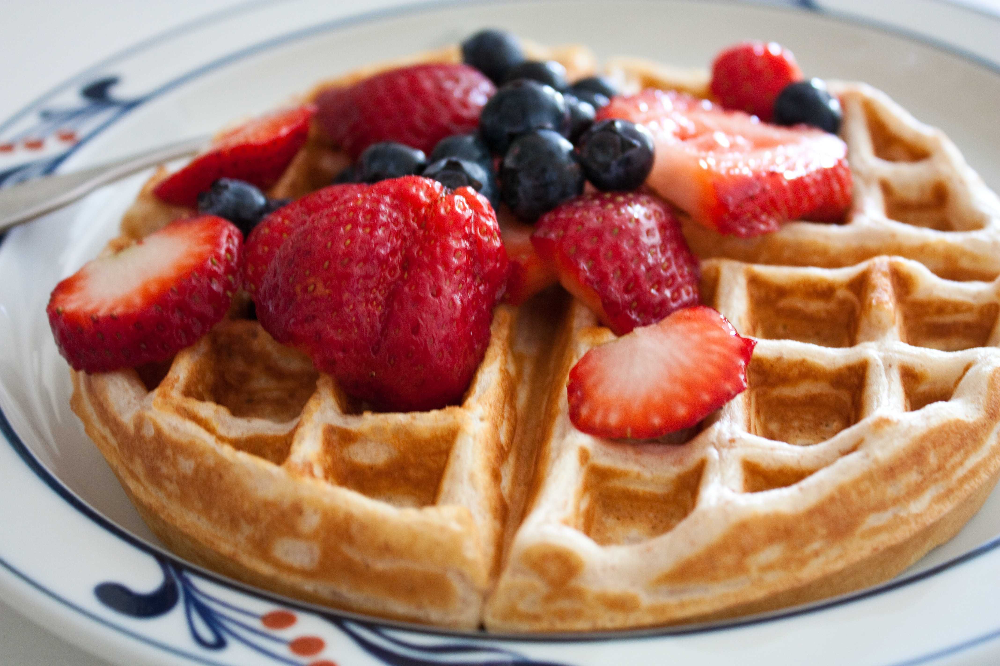

Belgian Waffles

Indulge in the irresistible delight of Belgian waffles with this simple recipe. These
light and fluffy waffles make the perfect breakfast with your choice of fresh
fruits, favorite syrup, or whipped cream
Ingredients
- 2 cups of flour
- 2 tbps sugar
- 1 tbsp baking powder
- 1/2 tsp salt
- 1 3/4 cups milk
- 1/3 cup vegetable oil
- 2 large eggs
- 1 tsp vanilla extract
- Mixed fresh berries or sliced fruit
- Syrup of your choice
Steps
- In a large mixing bowl, whisk together the flour, sugar, baking powder, and salt.
- In a separate bowl, whisk together the milk, vegetable oil, eggs, and vanilla extract.
- Pour the wet ingredients into the dry ingredients, and gently stir until just combined. Do not overmix.
- Preheat your waffle iron and lightly grease it. Ladle the batter onto the hot waffle iron and cook for 6 minutes.
Once cooked, serve the Belgian waffles topped with fresh fruit and syrup. Enjoy!